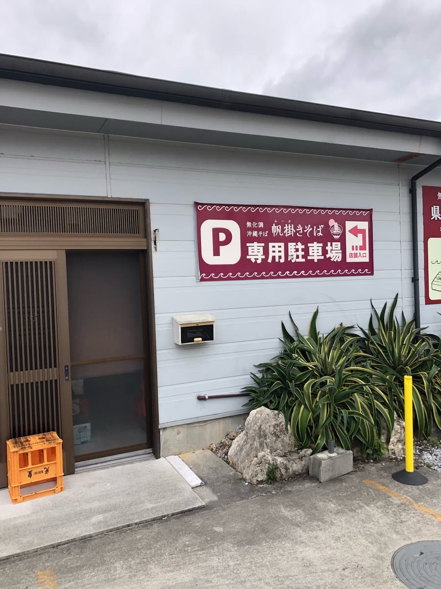
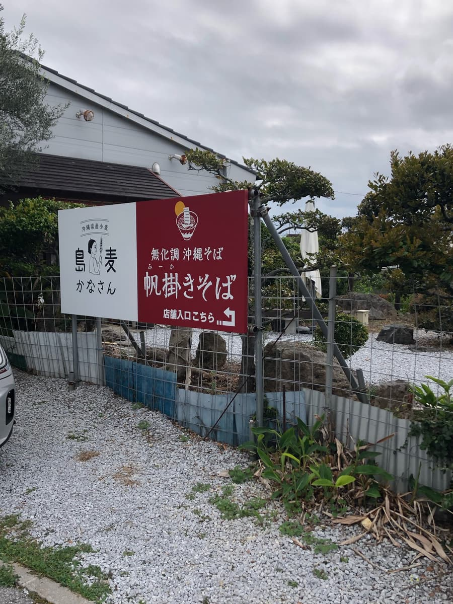
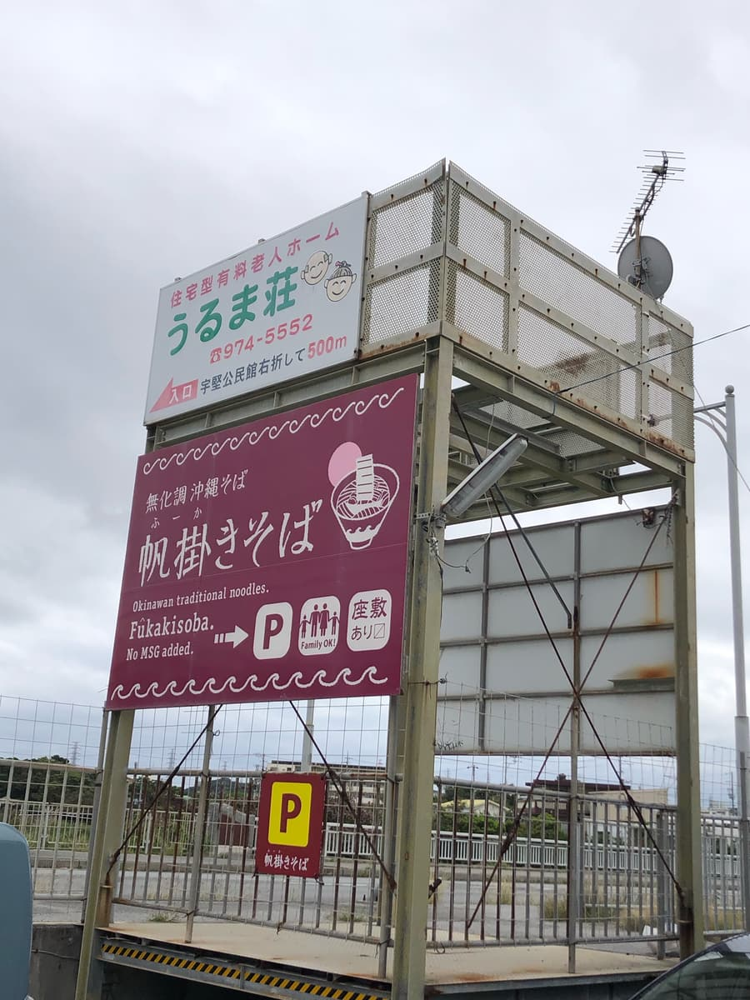
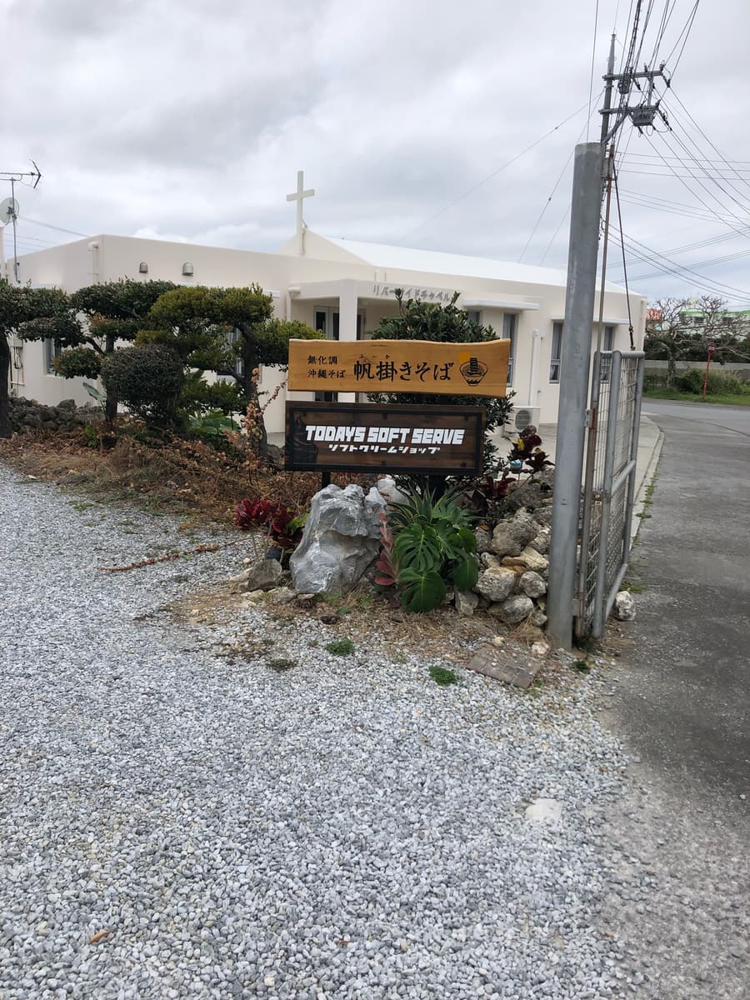
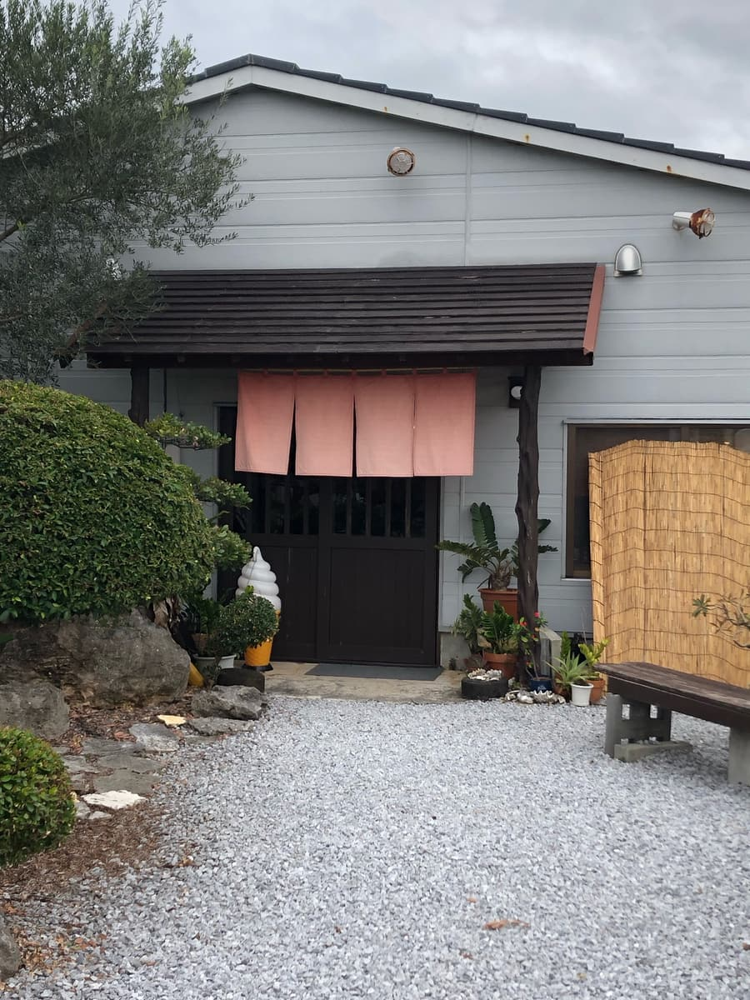
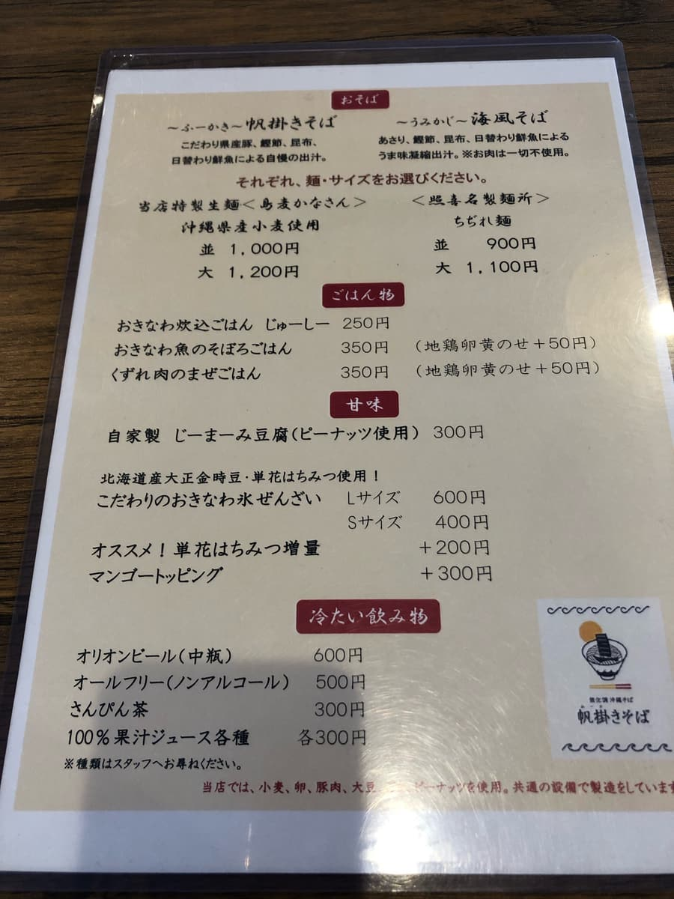
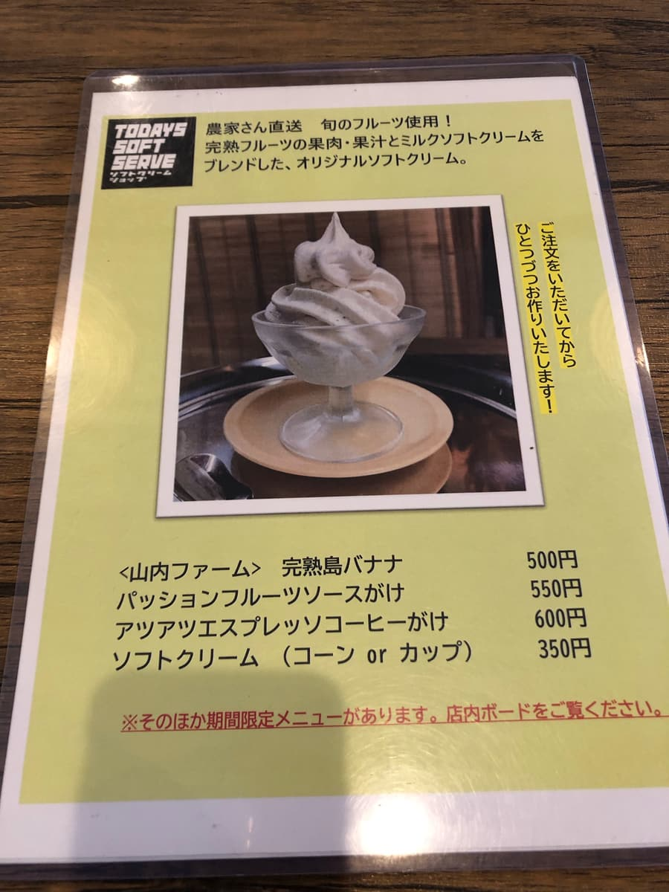
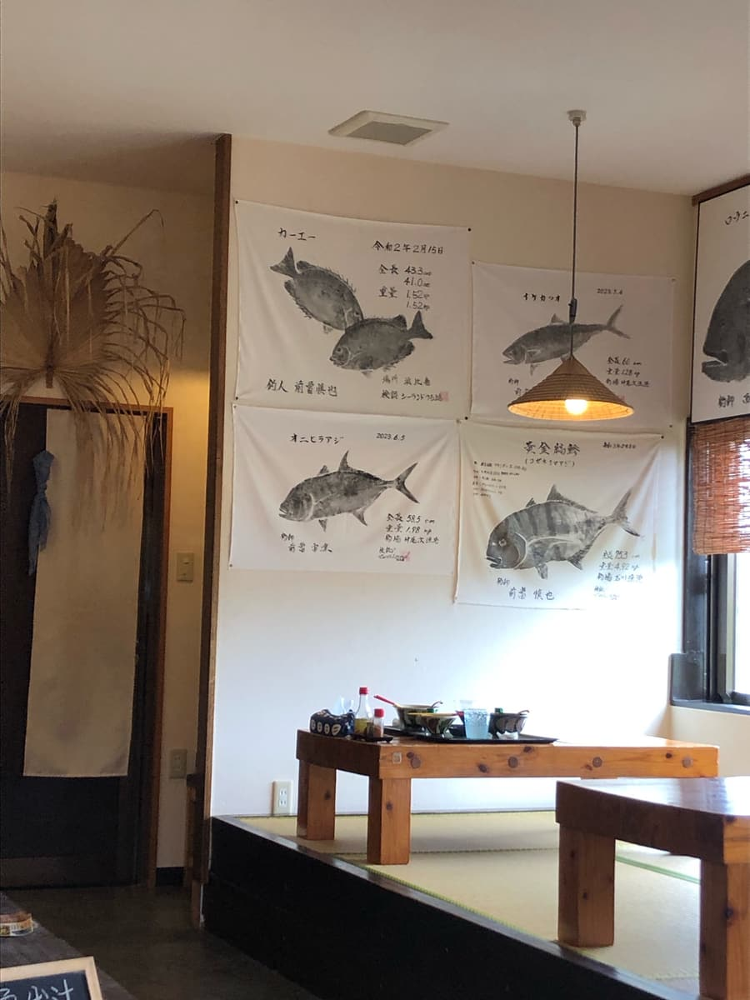
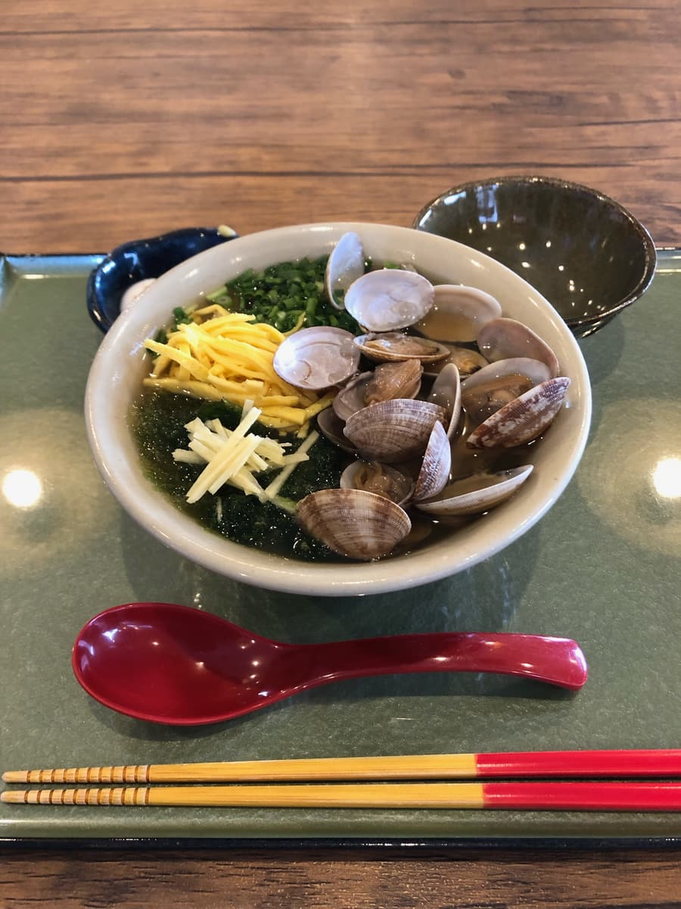
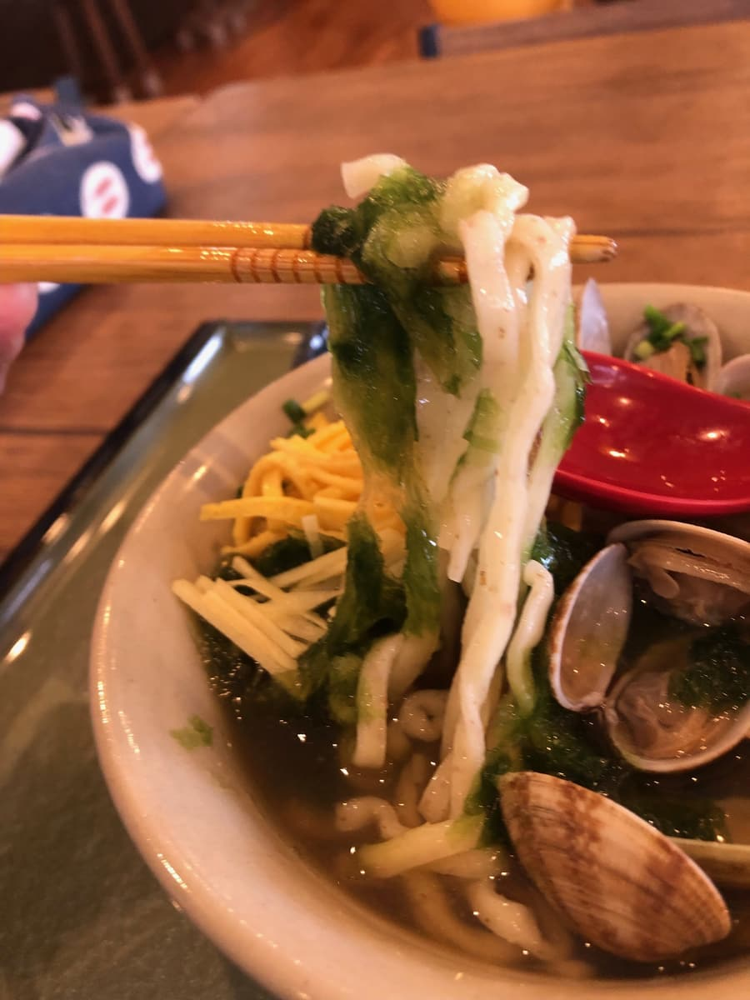

2024년 2월에 먹었습니다😄







이번에는 2종류의 소바 메뉴 중에서 “우미카지(바닷바람) 소바”를 주문. 메뉴판에 따르면 “바지락, 가쓰오부시, 다시마, 그날그날 바뀌는 신선한 생선으로 감칠맛을 응축한 육수. ※고기는 일절 사용하지 않음.”이라고 합니다.
면도 가게 특제 생면(시마무기 카나산)과 데루키나 제면소의 꼬불면 2종류 중에서 고를 수 있어서, 이번에는 특제 생면(시마무기 카나산)을 선택했습니다😄
맛있어 보이네요😁

가게 안에는 커다란 어탁도 붙어 있었습니다. 점장님이 낚은 물고기 같습니다.

우미카지 소바가 나왔습니다. 바지락, 파래(아사) 등 바다의 것이 가득 들어 있어서 맛있어 보이네요. 먼저 국물을 맛봅니다.
고기를 일절 쓰지 않은 해산물 계열 육수는 생각보다 담백한 맛이고, 짠맛도 느껴지는 느낌입니다. 기본적으로는 싱거운 편이네요.
바지락은 듬뿍 들어 있지만, 국물은 해산물 맛도 그다지 느껴지지 않습니다.

다음으로 면을 먹어 봅니다. 현산 밀을 사용한 특제 생면은 가는 면이고 쫄깃함이 있지만, 다른 가게의 생면보다 쫄깃하다는 느낌은 아니네요.
평가(9점/15점): 평범하게 맛있지만, 생각보다 해산물 육수는 느껴지지 않고 담백한 계열의 짭짤한 국물이었습니다. 바지락은 듬뿍 들어 있었습니다. 면도 평범한 느낌이네요.
면: ★★★☆☆（3）
수프: ★★★☆☆（3）
토핑: ★★★☆☆（3）